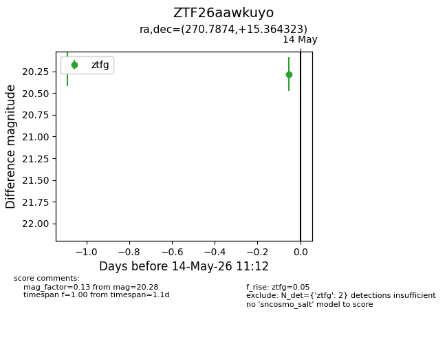
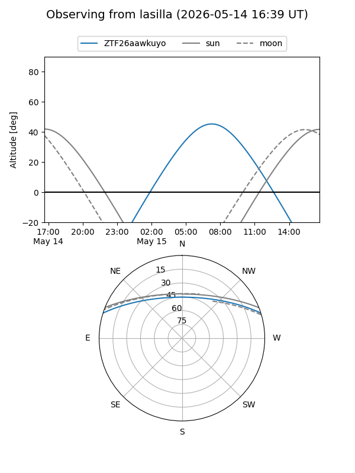
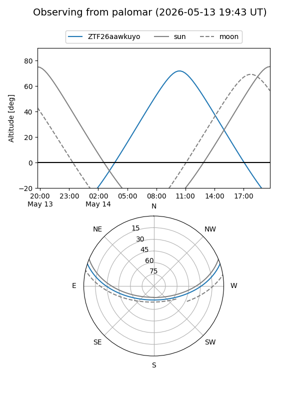

ZTF26aawkuyo
Target ZTF26aawkuyo at 2026-05-14 11:14
Aliases and brokers:
FINK: link
Lasair: link
ALeRCE: link
alt names
ZTF26aawkuyo (ztf,fink_ztf)
Coordinates:
equatorial (ra, dec) = 270.7874,+15.36432
equatorial (HMS+DMS) = 18:03:08.98,+15:21:51.56
galactic (l, b) = (41.6058,+17.47545)
Flags:
Photometry:
last ztfg=20.28
2 ztfg detections
Lightcurve

Visibility


Additional plots